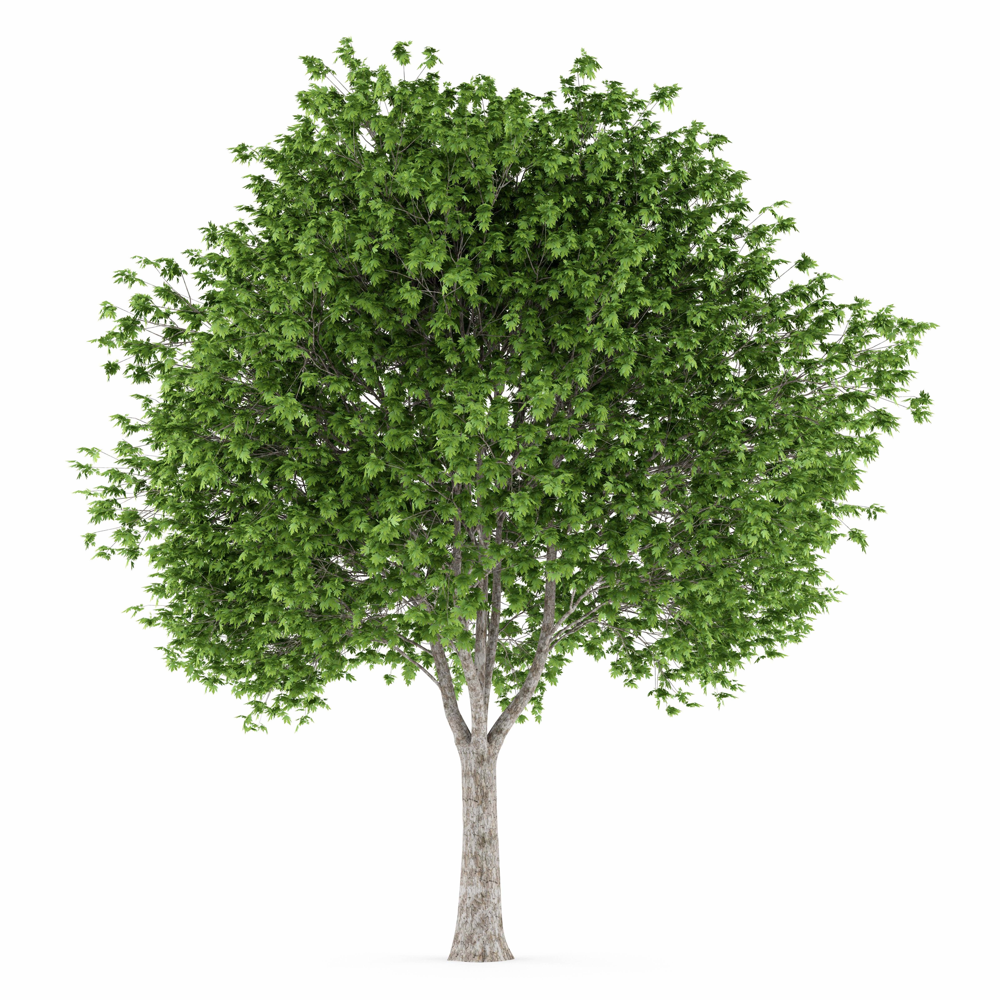

London Planetree
Platanus x acerifolia

A hybrid cross of the Oriental planetree and American sycamore. Because of its tolerance for urban pollutants, this tree was widely planted in London and other major European towns. American city planting became popular, and in New York City today, over 80,000 of them are on the streets spread across the five boroughs.
- Order: Proteales
- Family: Platanaceae – plane trees
- Genus: Platanus L. – sycamore
- Bloom Period: Late Spring
- Foliage Color: Yellow-Green